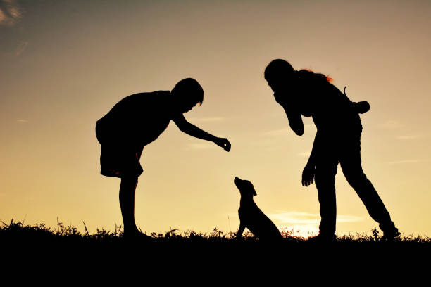
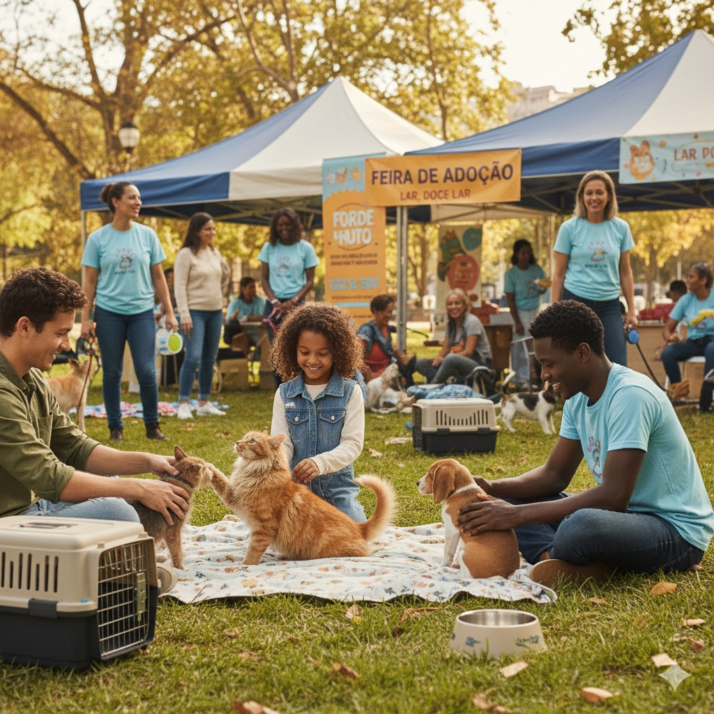

1. Resgate e Reabilitação de Animais
Este é o nosso núcleo de trabalho. Garantimos abrigo temporário, alimentação de qualidade e todo o suporte veterinário necessário para a recuperação física e emocional dos animais resgatados.

Como está sendo usado o recurso?
Os recursos deste projeto cobrem cirurgias, medicamentos, exames e custos de internação.
2. Feiras de Adoção Responsável
Realizamos eventos mensais em parceria com clínicas e estabelecimentos locais para apresentar nossos animais reabilitados a famílias em busca de adoção. Nosso processo é rigoroso e focado no bem-estar mútuo.

Indicadores de Sucesso
Já encontramos o lar definitivo para 95% dos animais que participaram das feiras nos últimos 2 anos.